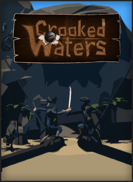

Crooked Waters
Crooked Waters
Details
|  | |
| Playtime | Not Played |
| Last Activity | Never |
| Added | 14/08/2020 |
| Modified | Never |
| Completion Status | Not Played |
| Source | Steam |
| Platform | PC |
| Release Date | 13/07/2018 |
| Community Score | 65 |
| Critic Score | |
| User Score | |
| Genre | Action Early Access Indie Strategy |
| Developer | Craft Game Studio |
| Publisher | Craft Game Studio |
| Feature | Co-op Multiplayer Online Co-Op Online Pvp Pvp VR VR Motion Controllers VR Motion Controllers VR Room-Scale VR Standing |
| Links | PCGamingWiki Community Hub Discussions Guides Store Page News |
Description
DISCLAIMER: THIS GAME IS IN EARLY ACCESS AND REQUIRES A HTC VIVE OR OCULUS RIFT TO PLAY. PLEASE DO NOT PURCHASE IT UNLESS YOU HAVE A EITHER OF THESE AND WANT TO ACTIVELY SUPPORT THE DEVELOPMENT OF THE GAME AND ARE PREPARED TO HANDLE A FEW ISSUES.

Crooked Waters is a multiplayer virtual reality game where players immerse in thrilling sea fights. Together with your fellow pirates you'll try to survive the clash with other pirate ships.

In Crooked Waters' newly added gamemode "Conquest", you and up to three other players man a pirate vessel and venture into uncharted territory to fight for the famous treasure that is hidden deep in a heavily fortified fortress. But watch your step, the treasure is heavily guarded by a cursed skeleton army. And where there is treasure there are bound to be other pirates nearby.
So keep the cannons loaded and your weapons ready, and it might be your crew claiming the treasure.

Crooked Waters is a multiplayer virtual reality game where players immerse in thrilling sea fights. Together with your fellow pirates you'll try to survive the clash with other pirate ships.
Weigh the anchor! Load the cannons! Set sail!
The ship won't conquer the enemy on it's own, and it needs its crew. Are you a captain? A cannoneer? Or a mere Scallywag? There is no rank when you're in the heat of battle. Adjust the sails so you'll have the speed advantage, supply your cannoneers with ammo or chant some Yo Ho Ho! and Ye He He to keep the morale high. Sink those Scurvy Dogs when you get the chance, because there is no room for others in these Crooked Waters.In Crooked Waters' newly added gamemode "Conquest", you and up to three other players man a pirate vessel and venture into uncharted territory to fight for the famous treasure that is hidden deep in a heavily fortified fortress. But watch your step, the treasure is heavily guarded by a cursed skeleton army. And where there is treasure there are bound to be other pirates nearby.
So keep the cannons loaded and your weapons ready, and it might be your crew claiming the treasure.
Key features:
- Play your way - Crooked Waters Conquest game mode can be played with one (co-op) or two (versus) teams consisting of one to four players. And with two available ship types you can always choose a ship suitable for your team size. This way you can always play the game, no matter how many players are in your game, without feeling like you are missing out.
- Free movement - Climb in the crowsnest, sprint over the deck and fire the cannons, go down below deck to grab rewards. Move freely around the ship using locomotion or touchpad movement and experience true freedom!
- Easy to learn, hard to master - With intuitive controls and clear indicators the game teaches you the basics and sets you up to start mastering all kinds of different mechanics that set your crew apart from the others.